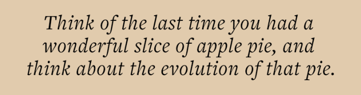
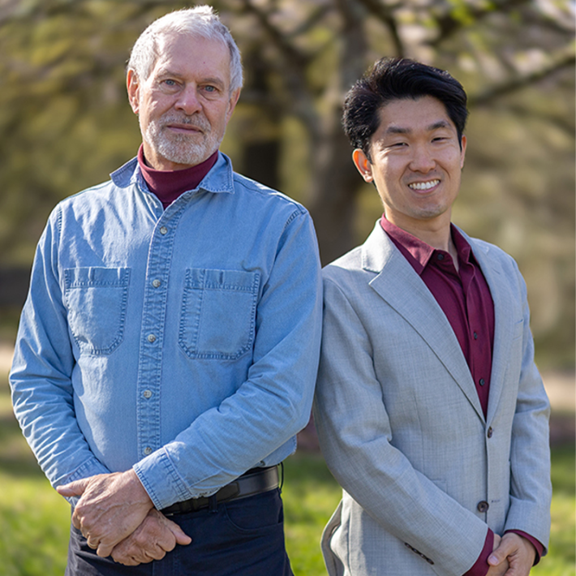
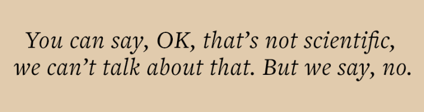

This story is featured in our upcoming print issue—subscribers get full access both in print and online. Join now.
If there was an award for the most depressing law of physics, the prize would go to the second law of thermodynamics, hands down. The second law says, roughly, that the amount of disorder in the universe keeps increasing. Stuff breaks down. You and I will break down, and one day the universe itself will run out of steam. The Oxford chemist Peter Atkins captured this pessimism in 1984 when he wrote:
We have looked through the window on to the world provided by the Second Law, and have seen the purposelessness of nature … All change, and time’s arrow, point in the direction of corruption. The experience of time is the gearing of the electrochemical processes in our brains to the purposeless drift into chaos as we sink into equilibrium and the grave.
But wait: When we look around us, we also see something quite different. We see acorns grow into mighty oaks, and, over millennia, we see new species arise, and new levels of complexity realized. Consider the brain: It is, as far as we can tell, the most complex structure in the known cosmos. When the universe was young, it boasted no such features; today there are billions of them (including the one in your head and the one in my head).
Read more: “Time Flows Toward Order”
This is where geoscientist Robert M. Hazen and astrobiologist Michael L. Wong come in. The two researchers, both at the Carnegie Institution for Science in Washington DC, believe the second law of thermodynamics doesn’t tell the whole story. Instead, another law, previously unnoticed (or at least given short shrift), is driving certain kinds of physical systems toward increasing order. They wrote about this idea in a 2023 paper, published in the Proceedings of the National Academy of Sciences, and now they’ve expanded on it further in their new book, Time’s Second Arrow: Evolution, Order, and a New Law of Nature.
Hazen and Wong are not the first to wonder whether the second law of thermodynamics has been oversold. Our affinity for that law, as the British physicist Julian Barbour wrote in Nautilus, has “led us to misunderstand what is happening in the universe and even blinded us to the beauty that it is creating.”
Still, proposing a new law of nature takes a lot of chutzpah—could the scientific community really have overlooked such an important and yet seemingly simple idea for so long? At any rate, I was keen to hear more. I recently caught up with Hazen and Wong via videoconference.

What’s wrong with the second law of thermodynamics? What does it leave out?
Robert M. Hazen: Physicists have long said that the only macroscopic experiential arrow of time is the one related to the increase in disorder in the universe. We’re getting older, our cells are dying. We buy a new pair of shoes and they get scuffed. I have this nice hot cup of tea, and it’s getting colder as we sit here, on and on and on. That’s an arrow of time. That’s the only arrow of time that’s embedded in natural law. I thought, hold it, that’s just simply not what I experience in my life. I see my children born, I see them grow, I see them learn. I see science expanding as an endeavor; we know more now than we did 10 years ago. I see new books and new, creative music. We see all sorts of these kinds of phenomena.
Why do you believe this new law of nature, “time’s second arrow,” is necessary to understand the universe?
Michael L. Wong: The reason why we think that this extra law, the second arrow of time, is necessary, is because the second law doesn’t explicitly address the tendency for evolving systems to become increasingly complex, or patterned, or ordered, or diverse, over time. You can imagine a universe that starts in a very low entropy state, just like the Big Bang, and progresses toward heat death, toward its maximal entropy state, without creating any complex systems at all.
We think that there is an extra piece missing in the explanation for all of the marvelous things that we see around us. And that missing piece, that missing law, must, of course, be consistent with the second law of thermodynamics—but may not inevitably follow from it. That is, you cannot just derive it from knowing the second law of thermodynamics. And so, this other law has to do with an increase of information.

BOLD PROPONENTS: Geoscientist Robert M. Hazen (left) and astrophysicist Michael L. Wong boldly go where few scientists have gone before in saying the universe also trends toward order. Photo courtesy of Carnegie Science / Katherine Cain.
You write this new law involves something called “functional information.” What is functional information?
Wong: The idea of functional information was first introduced by Jack Szostak in 2003, and Bob [Hazen] and colleagues expanded on it in 2007 in a great paper. It’s a metric that quantifies the possible configurations of a system that can achieve a certain goal, or do something useful. Imagine that you can enumerate all of the different configurations of, say, this coffee cup: The atoms in this coffee cup can take on googols and googols of different configurations, but only a small fraction of those succeed at holding a hot beverage, and have a nice handle so that I don’t burn myself when I pick it up. Our proposal is that this metric increases over time as a system tries out many different configurations of its components and then is subjected to selection for function.
“Selection” makes us think of Darwin and the idea of natural selection—but you argue that evolution applies much more broadly. What’s a good example?
Hazen: The one I’ve worked on for the last couple of decades is “mineral evolution.” Evolution is applied to a system when you see an increase in diversity of patterning, of different arrangements, of what you might call an increase in complexity. The very first minerals formed around the atmospheres of stars. There are about 25 different minerals that use 15 or so different chemical elements—but those minerals, literally stardust, then seeded the universe. So, then you could make rocky planets. Then rocky planets have a whole bunch of new processes. From there, you make 100 minerals, and from those 100 minerals, you then can make 300 minerals, and from those 300 minerals, you can make 1,000 minerals using different processes, new processes. You’re building stage by stage. You’re ratcheting up the complexity.
Read more: “The Idea of Entropy Has Led Us Astray”
Are there minimum requirements for a system to evolve?
Wong: Yes, three things are necessary: a large number of interacting components; ways to generate different configurations of those components; and “selection for function.”
Think of the last time you had a wonderful slice of apple pie and think about the evolution of that pie. There are all sorts of ingredients—flour, sugar, cinnamon, apples—that you can put together; and you can imagine those ingredients taking on any number of configurations, most of which would be absolutely horrendous, and not taste very good at all. But, through refining the recipes for apple pies, we’ve landed on relatively few configurations that work, that are delicious, that get selected and passed on and recorded in cookbooks, over generations. And so those apple pies that are selected for are the ones that we get to enjoy in bakeries, or that we make at home.
We live in a universe where there is, of course, an increase in entropy over time—but there’s also an increase in something else, as new apple pies are made, as new planets form, as new minerals are forged in those planets, as stars create heavier and heavier isotopes. Something is happening in addition to the increase of entropy, and we think it’s an increase of information.

Clearly the idea of information plays a key role in your proposal. But isn’t information subjective?For example, a highway sign might say “Toronto” and a certain number of miles or kilometers. That may be vitally important information for the person behind the wheel, but it conveys less information to a young child in the back seat of the car, and no information at all to a seagull that happens to be flying by.
Wong: You’re completely right that the functional information calculation is contextual. And that’s just the way it is. The functional information of the coffee cup for holding coffee is vastly different from the functional information of a coffee cup being used as a paperweight, because there are more configurations of these atoms that can succeed at that task. The functional information of a DNA strand is extraordinarily high when it’s in a cell with a ribosome, but zero when it’s just sitting bare-naked on the surface of the moon. It always depends on the system that you are considering, and the function that you are considering for that system.
Hazen: I’d like to underscore that. This idea of a value in physics being contextual is very disturbing to a lot of people. You know, the mass is the mass; the charge is charge; the density is the density. These things are measurable quantities. But here we’re saying, well, no, it depends on the environment that you’re evaluating. And if you put an object in one environment, it may have one stability, one purpose, one function—whatever word you want to use—but when you put it in a different environment, that changes. The mass doesn’t change, but the function does.
Now, you can say, OK, then that’s not scientific, we can’t talk about that. But we say, no: As scientists, our job is to describe, explain, quantify, and predict nature as it actually is, as we actually see it to be, not as we philosophically would like it to be. If, in nature, the function of an object is important to how a whole evolving system behaves, then, as scientists, we need to say that the function is important—so we have to identify what that function is. And if it’s environmental, if it’s contextual, so be it—that’s the way nature works.
You hint at an idea that was popular hundreds of years ago but has become almost taboo since the rise of modern science—namely, the idea that the universe may have a purpose. How seriously do you take the idea of cosmic purpose?
Hazen: Yes, I have thought about this. And you know, without gravity, we wouldn’t have stars; we wouldn’t have the periodic table of the elements. Without gravity, we wouldn’t have planets, and without planets, we wouldn’t have life, and we wouldn’t be sitting here talking about these profound ideas. So is the purpose of gravity, life? Is the purpose of gravity, stars and planets? Is the purpose of gravity, the periodic table of the elements? And we would say, no, gravity is just a mechanistic description of how the universe works. By the same token, what we’re describing is simply a mechanism. It’s a selection mechanism that goes on without any direction, without any purpose, without any end point in mind. It’s just that each step is a step that ratchets up functional information.
This is a book of big ideas. Will you be disappointed if it doesn’t make a big splash?
Wong: If it turns out to be fruitful, then wonderful. If it doesn’t, that’s OK too, because hopefully it is a stepping stone to whatever is next, whatever is better, whatever functions in an even greater way to help us understand the marvelous, evolving cosmos of ours.
Hazen: I fully agree with what Mike said. I don’t really care whether we’re right or wrong. I hope we’ve said something interesting. I hope that others can think about it, learn from it, and come up with better ideas. Our book is by no means an end point. But if it’s a beginning point, then we’ve really accomplished something, and that would be very exciting for me. 
Lead image: New Africa / Adobe Stock
References
- Original Article: https://nautil.us/time-brings-order-to-the-universe-1279584/